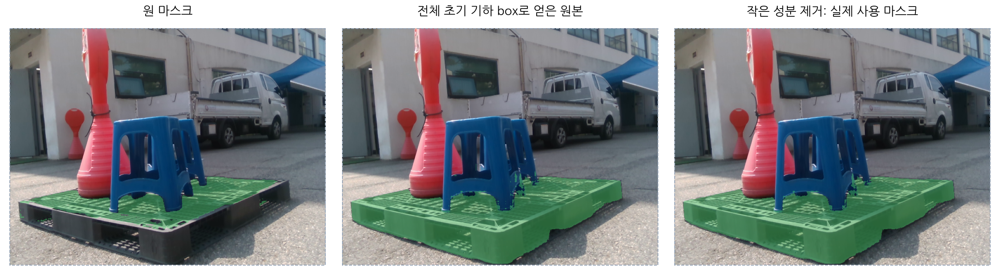
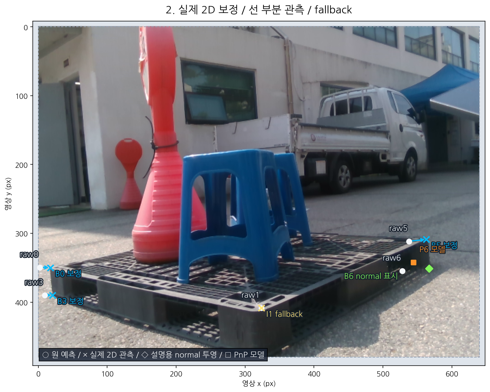
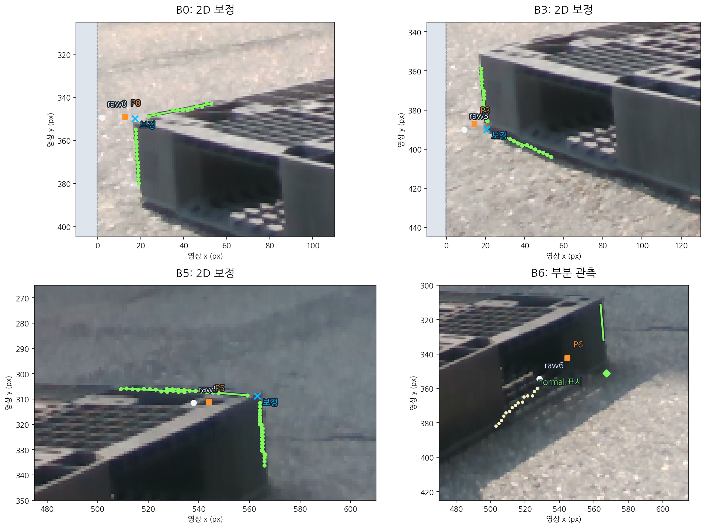
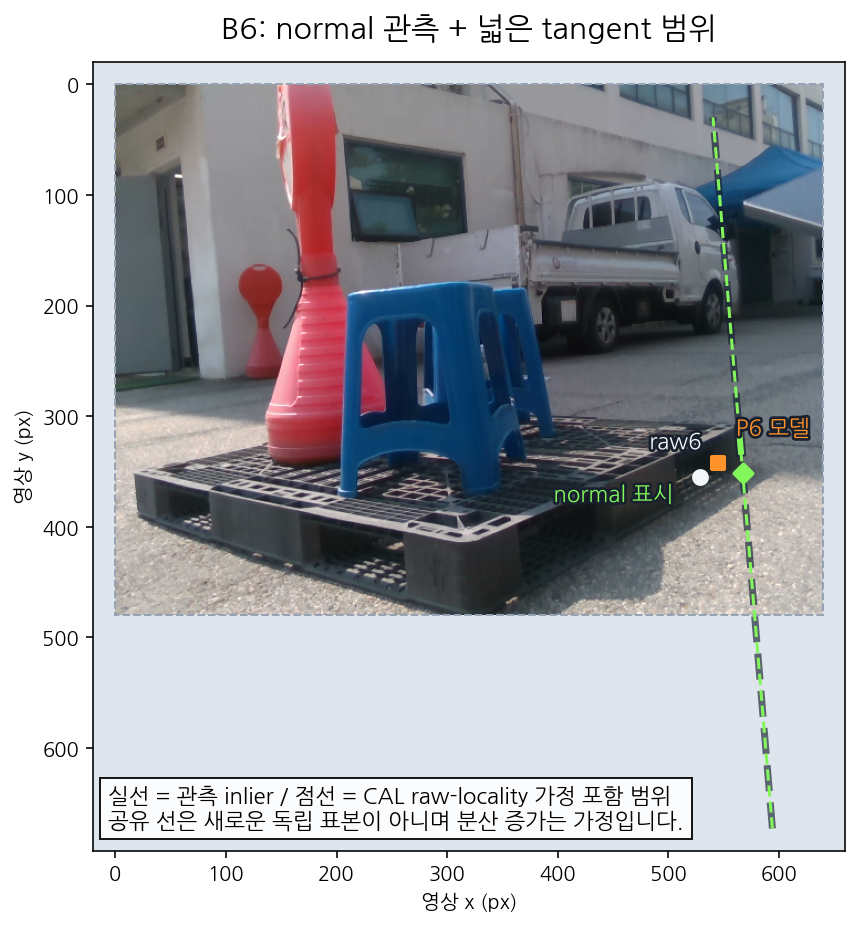
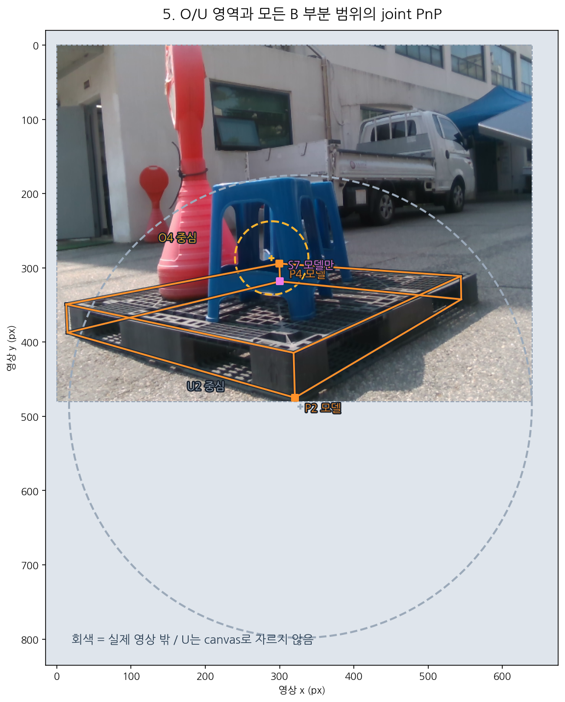
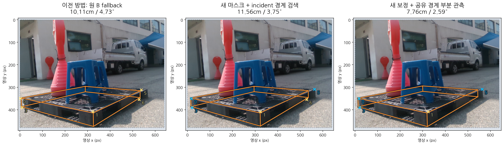
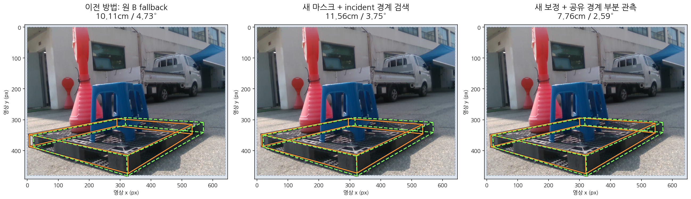

B 경계의 실제 영상 보정과 공유 선 부분 관측
eval_pallet07:1778652166837872128
B0: 2D 보정 · I1: fallback · B3: 2D 보정 · B5: 2D 보정 · B6: 부분 관측
위치오차 감소: 원 10.11cm / 4.73° → 최종 7.76cm / 2.59°. full 점 보정과 부분 선 관측을 구분하고, 추정 PnP 투영은 별도 기호로 표시합니다.
이 사례는 최종 7.76cm로 5cm 위치 기준을 여전히 넘습니다. TEST 성공은 44/49 → 44/49, 최대 위치오차는 12.80 → 12.80cm입니다. CAL 최대 위치오차는 14.60 → 17.29cm로 악화했고, TEST 모호성 표시는 0 → 1건입니다. 전체 문제 해결·최상 성능을 주장하지 않습니다.
CAL46·TEST49는 severe 제외, 모든 실패·fallback 포함입니다. TEST는 이미 살펴본 재사용 집합이며 탐색 결과입니다. 새 마스크를 넣었던 이전 V4.6 실패 결과(10.11cm → 13.61cm → 14.60cm)도 보존했습니다. 성공 수나 평균의 작은 변화로 통계적 우월성을 주장하지 않습니다.
1. 같은 사진·고정 상태, 보정용 마스크 범위 확대
새 마스크는 초기 모델 전체의 투영과 비S 영상 안 예측 범위를 box guide로 사용했습니다. MobileSAM의 기존 quality argmax로 선택하고 작은 연결 성분만 제거했습니다. 원 마스크와 모든 후보는 보존했습니다. 이번 incident 경계 검색 비교에서 새 SAM 추론은 없으며 Tiny 상태도 그대로입니다.

2. 각 점의 실제 처리 결과
B0: 2D 보정 · I1: fallback · B3: 2D 보정 · B5: 2D 보정 · B6: 부분 관측입니다. 부분 관측의 원 B점은 최종 2D likelihood에서 제거하며 full KP를 생성하지 않습니다. 기존 성공 B와 I 측정은 그대로 유지합니다.

3. 경계의 실제 RGB 표본과 모델 투영을 비교
작은 점은 저장된 실제 검색 표본, 녹색 선분은 품질 조건을 통과한 실제 inlier 구간입니다. 검색 반경의 floor는 기존 along_end36 + context7 =43px이며 RGB·방향12°·RMS·표본수·finite support11px 수치는 유지합니다. 높은 sine보다 먼저11px 지지 조건을 통과한 교점을 선택합니다.

4. 공유 경계는 exact KP가 아니라 normal·범위 관측
실제로 검증한 B-to-B edge는 같은 두 endpoint의 선 관측으로 사용할 수 있습니다. 아직 full 보정이 없는 B만 받으며 S/O/U/T/I는 제외합니다. source 선을 새 독립 영상 증거로 세지 않고 고정된 보수적 분산 증가를 사용합니다. tangent 범위는 실제 inlier 구간과 기존 CAL raw-localization 반경을 합친 가정이며 확률 보장은 없습니다. ◇의 x/y 전체를 정확한 점으로 PnP에 넣지 않습니다.

5. O/U는 기존 영역 그대로, S는 PnP 투영만
기존 O4 영역과 영상 밖 U2의 넓은 영역을 모든 B 부분 관측과 함께 적용합니다. U를 점 비용·새 image line·PnP seed로 사용하지 않으며 S7의 raw/RGB 검색은 없습니다. 주황 □는 추정 모델의 투영입니다.

6. 실제 저장된 세 가지 자세 결과
10.11cm / 4.73° → 11.56cm / 3.75° → 7.76cm / 2.59°입니다. 같은 초기 자세·native XYZ/Q·CAL prior·fitΣ/weights·상태·O/U 영역을 사용했습니다. 보정된 2D 경계와 물리 자세오차의 변화는 따로 평가합니다. original V4.5 기준을 생략하지 않았습니다.

7. reference는 봉인 후 물리 box 비교에만 표시
녹색 점선은 body_R/body_xyz와 reference 중심의 사후 투영, 주황은 각 방법 자체의 모델 투영입니다. 이 사례의 native 번호 등록 불일치를 수동 카메라90° 회전·번호 재정렬로 고치지 않았습니다. 초록 코너를 동일 native KP 관측으로 사용하지 않았고 all49 점수에서 이 사례도 유지했습니다.

남는 가정과 한계
공유 RGB 선은 두 endpoint를 잇는 초기 native 기하 대응을 가정합니다. 같은 선을 새 독립 증거로 부풀리지 않으며 분산 증가는 engineering 가정입니다. CAL의 넓은 tangent 예산은 새 B 전용 확률 교정이 아닙니다.
S raw/RGB는 사용하지 않았고 U는 영역만 사용합니다. reference body wire는 사후 비교입니다. 이 사례의 native 번호 등록 불일치를 수동 번호나 카메라 축 변환으로 고치지 않았습니다. 2D 경계 보정과 물리 3D 자세오차를 동일한 성공으로 취급하지 않습니다.
원본 실제 사진